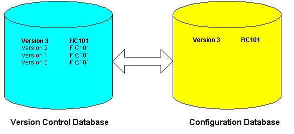

Version Control
DeltaV Version Control (VCAT) helps you manage configuration and user security changes by retaining previous versions of the configuration and security items. Version Control enables you to see who made changes and the reason given for any changes made. It allows you to restore previous versions of items or entire databases, to archive Version Control databases, restore archives, and clean up the database after restoring items. When enabled, Version Control affects all of the configuration items that you add, edit, or delete using DeltaV Explorer, Control Studio, Recipe Studio, I/O Configuration, and System Alarm Management (SAM), and all of the security items that you add, edit, or delete using DeltaV User Manager.
In addition, you can enable Version Control for DeltaV Displays. Version Control for DeltaV Displays requires DeltaV Version Control be enabled. That is, Version Control for DeltaV Displays cannot be enabled alone. Setting up, enabling and disabling, preferences, and the functions and locks options that are set for DeltaV Version Control apply to Version Control for DeltaV Displays. No additional configuration is required. However, there are some behavioral differences between Version Control's management of configuration items and its management of graphic and schedule files.
You can also enable Version Control for documents to manage changes for other types of files, for example, plant standard operating procedures, instrumentation diagrams, and so on. VCAT for documents can store any type of file. To enable VCAT for documents, Version Control or Version Control for DeltaV SIS must be enabled. That is, Version Control for documents cannot be enabled alone. Setting up, enabling and disabling, preferences, and the functions and locks options that are set for DeltaV Version Control apply to Version Control for documents. No additional configuration is required. However, there are some behavioral differences between Version Control's management of configuration items and its management of documents and other files.
When you enable Version Control, the DeltaV system creates a Version Control database and populates it with the items in your current configuration database. Once you have established the Version Control database and Version Control is enabled, you can see configuration changes by comparing versions of items in the Version Control database with the items in the configuration database.
The version control database name is based on the configuration database name.
After enabling Version Control, you can set your Version Control preferences using DeltaV Explorer.

The following items are not tracked in the Version Control database.
- Changes to transducer and resource blocks in commissioned fieldbus devices.
- Changes to decommissioned fieldbus devices, including their resource and transducer blocks.
- Imported items from third-party sources (for example, fieldbus revisions in the library)
- Licenses
Subtopics:
- Setting up and disabling Version Control
- Checking items in and out
- Deleting configuration items when Version Control is
enabled
- Version Control database search
- Version Control messages
- Item history
- History Report
- Item differences
- Version Control history and library objects
- Version Control history for batch and recipe objects
- Recover/Purge command
- Version Control labels
- Version Control and downloads
- Version Control Snapshot tool
- Synchronize Databases tool
- Back up the Version Control database
- Archiving the Version Control database
- Restoring a Version Control database from an archive
- Cleaning a Version Control database
- Version Control error conditions
- Increase the space allocated for Version Control data files
- Version Control for DeltaV Operate displays
- Version Control for documents
- Version Control and DeltaV Upgrade